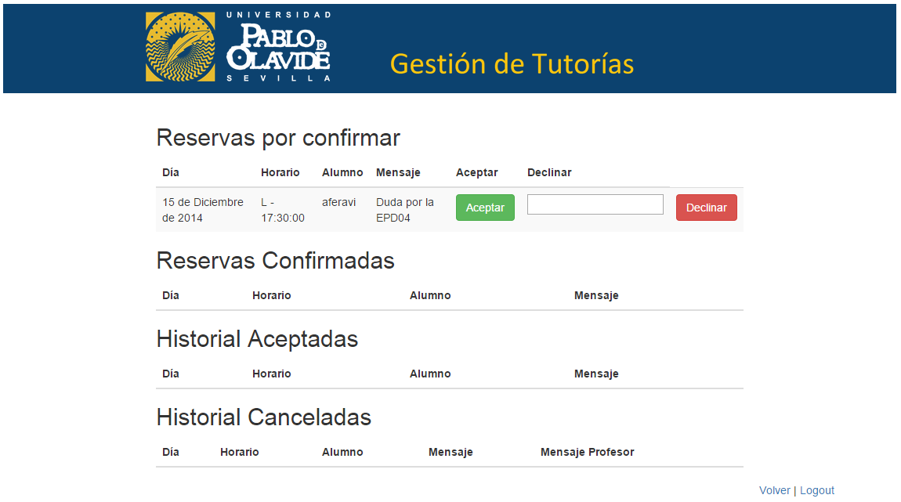
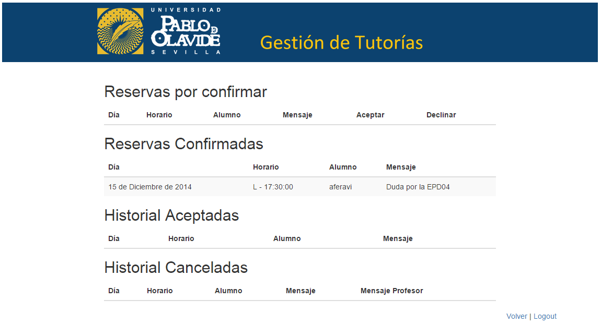
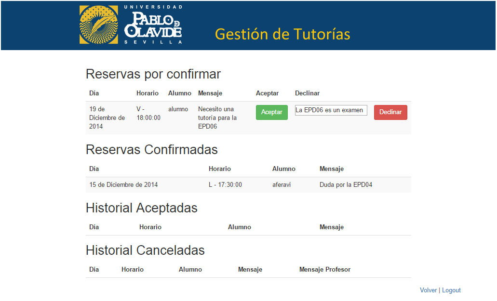
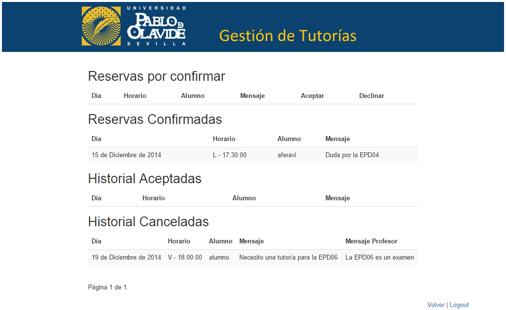

Notificaciones profesor¶
Por otro lado, en el panel del profesor, este puede acceder a sus notificaciones mediante el botón Notificaciones
El profesor puede ver en sus notificaciones las reservas por confirmar, las reservas confirmadas, el historial de reservas aceptadas y el historial de reservas canceladas.
Reservas por confirmar¶
Si un alumno pide una tutoría a un profesor, a este, le aparece una nueva notificación.
El profesor pulsa sobre el botón de Notificaciones del panel de profesor.
Al profesor le aparece una nueva reserva por confirmar.
En este punto, el profesor tiene la opción de aceptar la tutoría pulsando sobre el botón Aceptar.
O bien, el profesor tiene la opción de rechazar la tutoría pulsando sobre el botón Declinar, con la opción de escribir un mensaje al alumno.
Reservas confirmadas¶
Cuando un profesor confirma una reserva, esta aparece en un listado de reservas confirmadas que están pendientes de realizarse.
Historial de reservas aceptadas¶
En esta apartado aparece un historial de las tutorías que ha realizado el profesor
Historial de reservas canceladas¶
En esta apartado aparece un historial de las tutorías que ha cancelado el profesor
